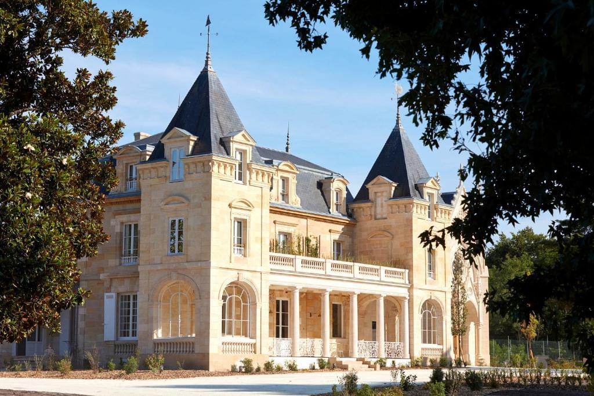
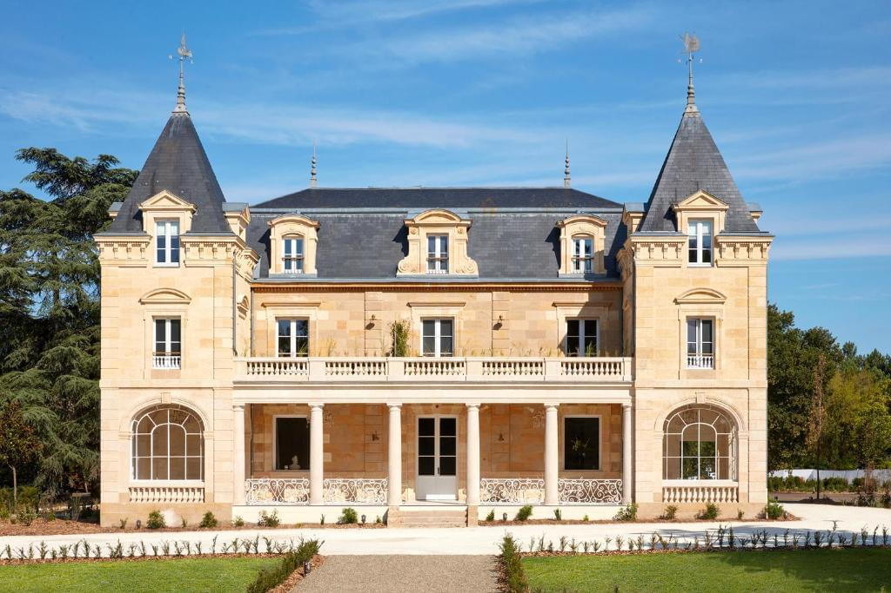
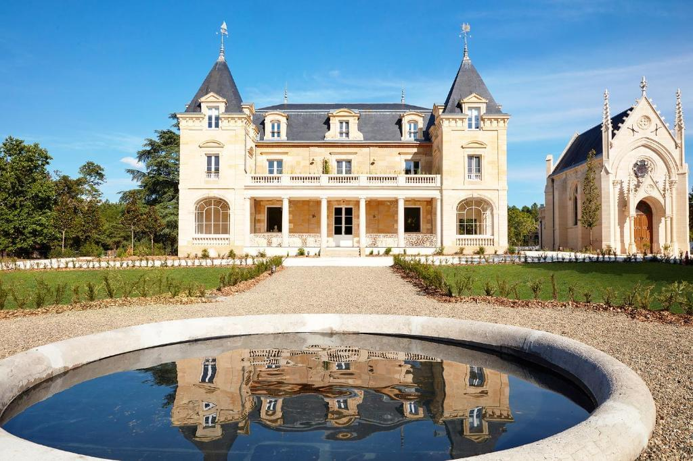
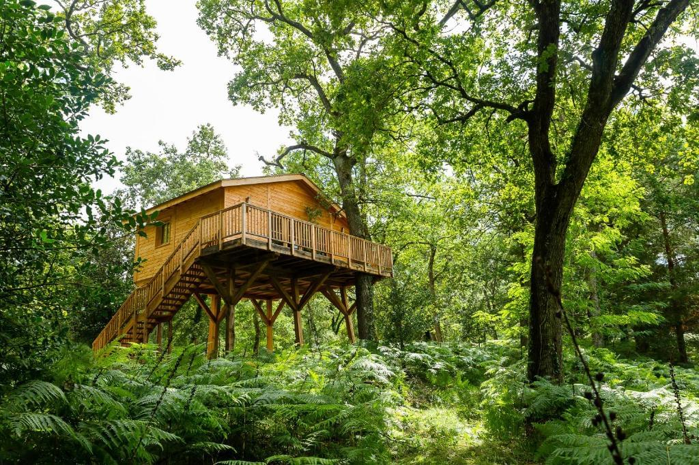
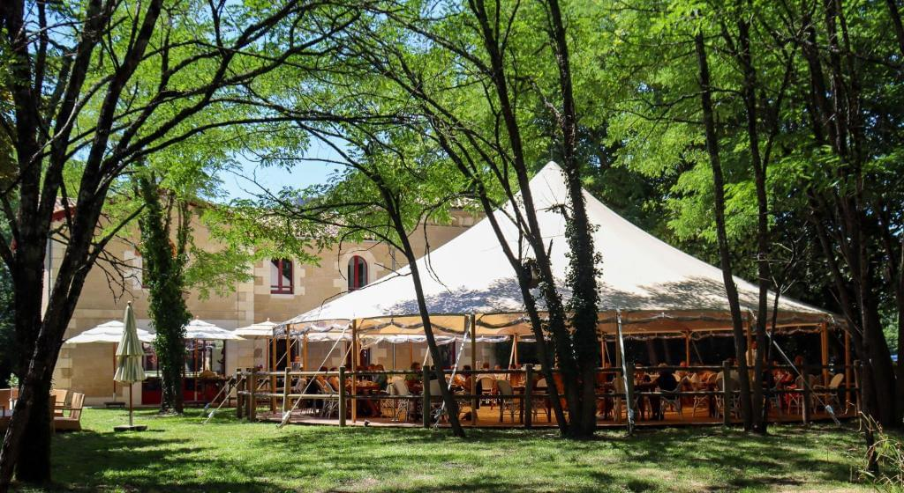
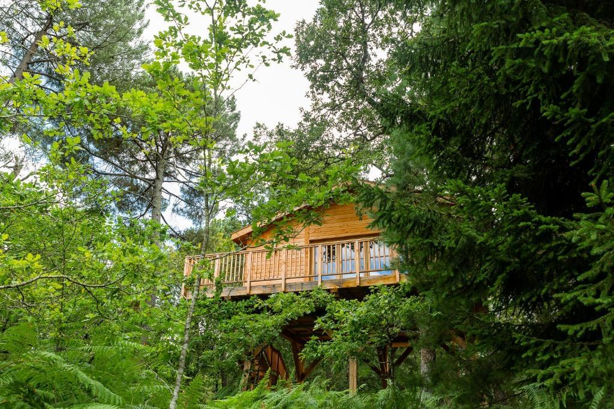
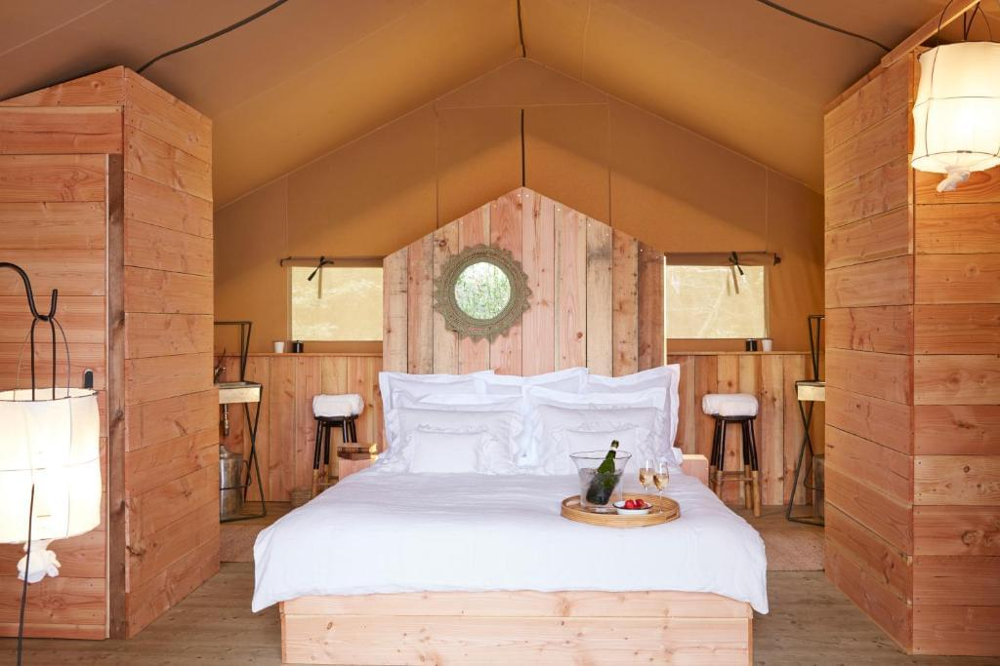
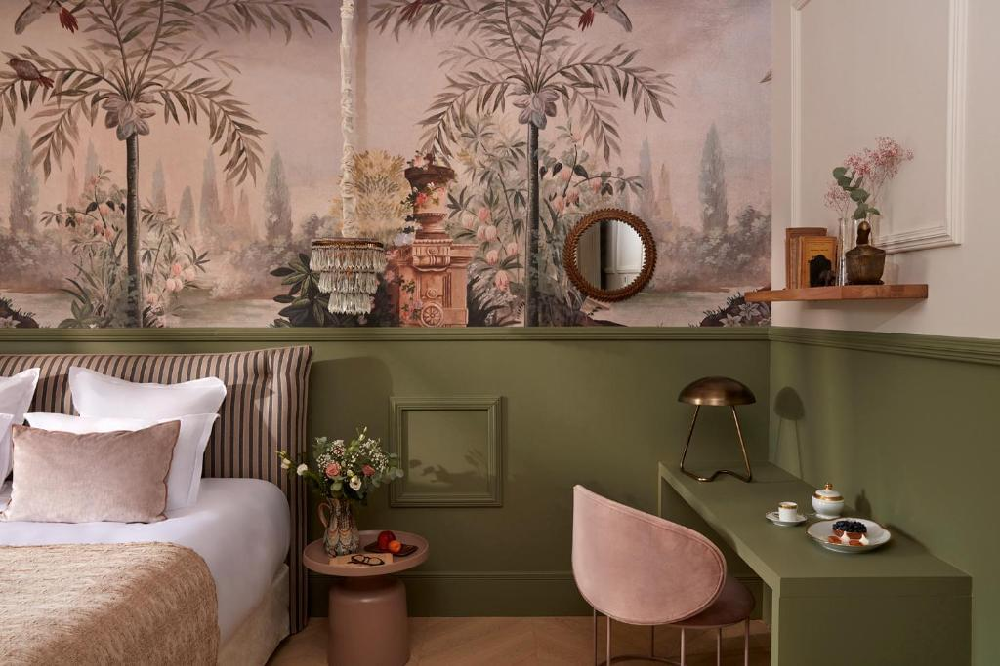
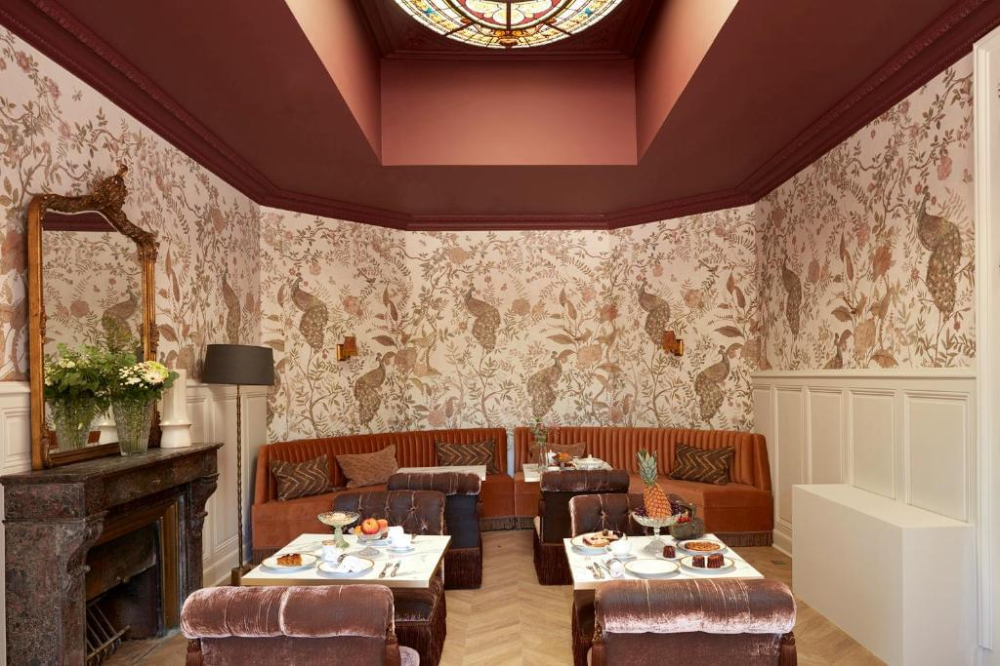
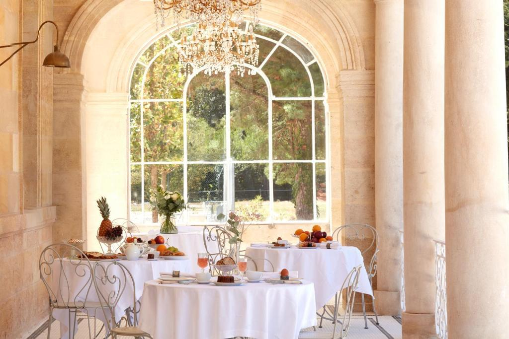

Nos jeux sont destinés à un public ADULTE de plus de 18 ans. Cliquez sur Accepté pour confirmer votre âge.
L'hôtel Château Léognan
Est un hôtel de luxe situé dans la célèbre région de Bordeaux en France. Cet hôtel offre une expérience unique combinant le luxe d'un château et la tradition viticole.
Le Château Léognan - Bordeaux - Nouvelle Ouverture est un lieu où le luxe rencontre la tradition et l'histoire de la viticulture, ce qui en fait un choix idéal pour les amateurs de vin, les voyageurs romantiques et ceux qui recherchent l'isolement au milieu de la nature.
I'hôtel peut donner accès à des expositions artistiques et à des événements culturels afin que les clients puissent s'immerger dans la culture française.


Emplacement

Le Château Léognan est situé au cœur de la région de Bordeaux, ce qui en fait une destination idéale pour les amateurs de vin et d'art. L'hôtel est situé dans la région viticole de Pessac-Léognan, célèbre pour ses vignobles et ses vins.

I'hôtel est situé dans un complexe de propriétés avec un magnifique château qui recrée l'atmosphère du vieux Bordeaux. Les clients peuvent savourer l'histoire en faisant le tour du château et de ses environs.

l'hôtel est situé au milieu des vignobles, ce qui permet aux clients de profiter de la beauté et de la tranquillité de cette région viticole.

les environs offrent d'excellentes possibilités de randonnées, d'exploration de la nature et de détente dans la belle campagne.
Hébergement et chambres
L'hôtel propose des chambres et des suites confortables avec un décor exquis qui reflète la valeur historique du lieu. Les chambres sont dotées d'équipements modernes et offrent des vues sur les vignobles.



Restaurant
L'hôtel dispose d'un restaurant servant une cuisine française et des vins produits sur place. Les clients peuvent apprécier une cuisine et des vins exceptionnels dans une atmosphère chaleureuse.

le Château Léognan est un domaine viticole et les clients ont la possibilité de participer à des visites du domaine et à des dégustations de vins pour en apprendre davantage sur la richesse du patrimoine viticole de la région.